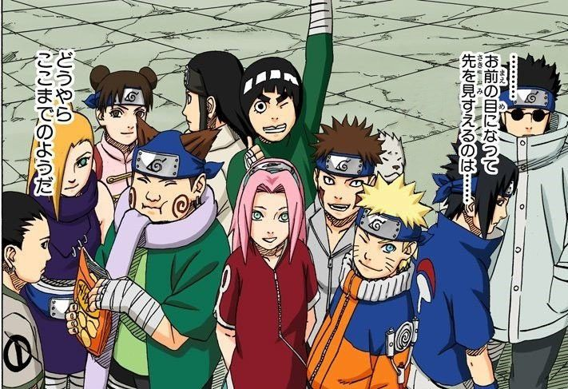
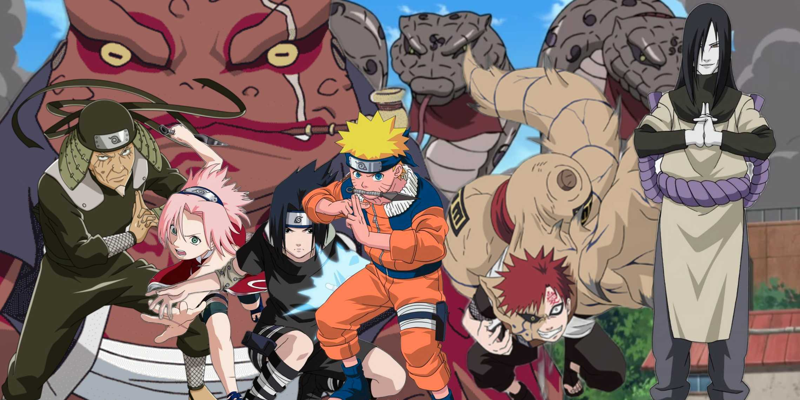
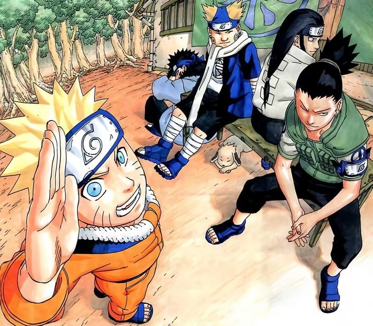
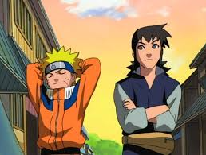

Naruto, Sasuke, and Sakura team up for their first major mission with Kakashi in the Land of Waves, where they face off against Zabuza and Haku.

Chunin Exam Arc (Episodes 20–67)
Team 7 enters the Chunin Exams, introducing characters like Rock Lee, Gaara, and Neji. This arc includes the Forest of Death and the preliminaries of the Chunin Exams.

Konoha Crush Arc (Episodes 68–80)
Orochimaru launches an attack on Konoha during the Chunin Exam finals, leading to a climactic battle between him and the Third Hokage, Hiruzen Sarutobi.
Search for Tsunade Arc (Episodes 81–100)
Jiraiya and Naruto set off to find Tsunade, the future Fifth Hokage, while Orochimaru tries to recruit her to heal his arms.

Sasuke Recovery Mission (Episodes 107–135)
Sasuke defects to join Orochimaru, and Naruto, along with a team of Genin, sets out to bring him back. Key battles include Naruto vs. Sasuke in the Valley of the End.

Filler Arcs (Episodes 136–220)
After the Sasuke Recovery Mission, the anime includes a variety of filler arcs, including the Land of Tea Escort Mission and the Star Guard Mission.